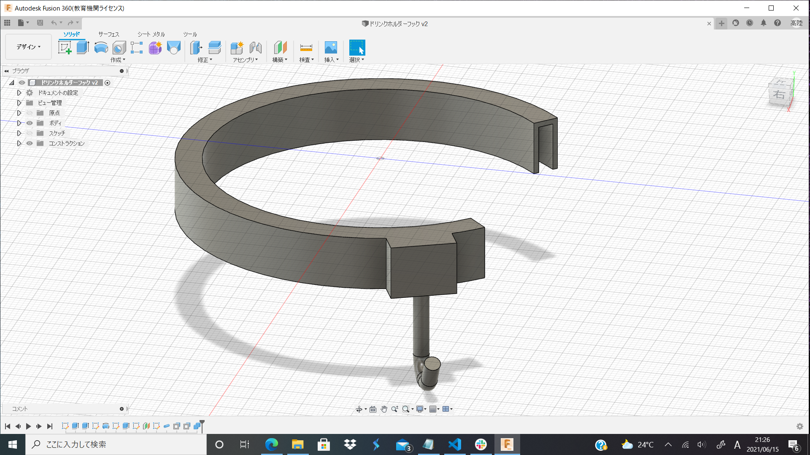
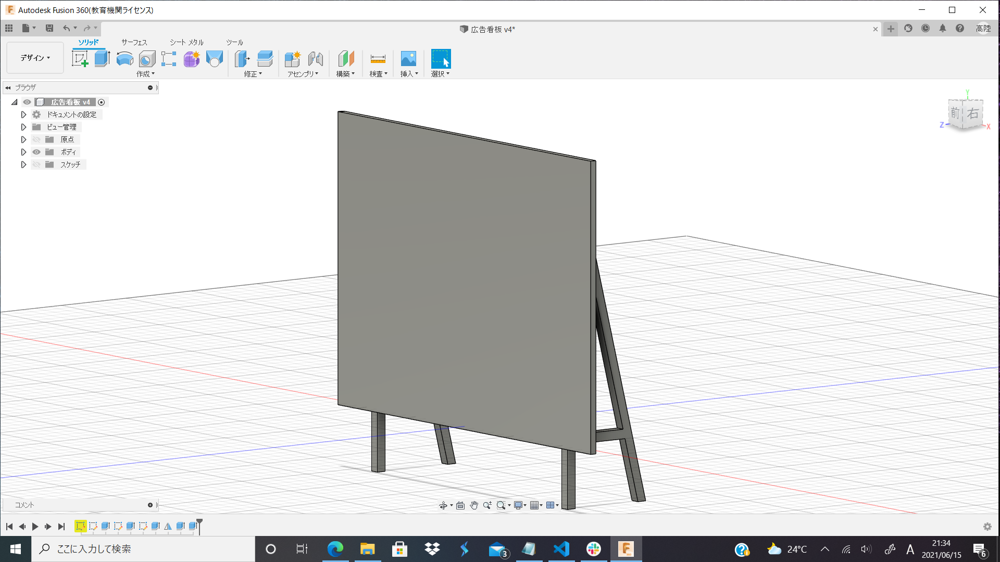

前回のゼミで自分のプロジェクトから道用先生のプロジェクトに移ることを決めた。理由は単純で自分のプロジェクトがあまりうまくいっていないこと、そもそもFUsionを使いたくてこのゼミに入ったことだ。
なので今月からopen design projectの製作物を紹介していく。
1

まずはプロジェクトの変更を決めたとき最初に製作した物。特に指示はなかったため作りたいものを作ってみた。用途としてはドリンクホルダーに上から装着することでドリンクホルダーに袋をかけられるようになる。
ドリンクホルダーはいたるところにあるが袋をかけるところはあまり見ないため機能を足すことを考えてみた。プリント結果も良好でサポートこそついたものの簡単にむしることが出来た。
2

この週から各自にテーマが設けられた。自分のは「飾る・置く」。まったくイメージが湧かないのでとりあえず作ってみたのがこれ。待ちでよく見かける広告看板的なものに写真を飾れたらオシャレかなーという安直な考えのもと製作した。
プロジェクトでは一発成型が前提なので(多分そうだったきがする)、サポートもなるべくつけず一発でということを考えると徐々にわからなくなり、結局この簡易的なデザインになってしまった。
実際印刷してみても結構厳しめなサポートが付き、あまり良いものは出来なかった。
今後の展望
先週のミーティングで今週の細かいテーマが眼鏡置きに決まった。機能性は持たせつつもデザイン性を置き去りにしない眼鏡置きの設計に精を出す。